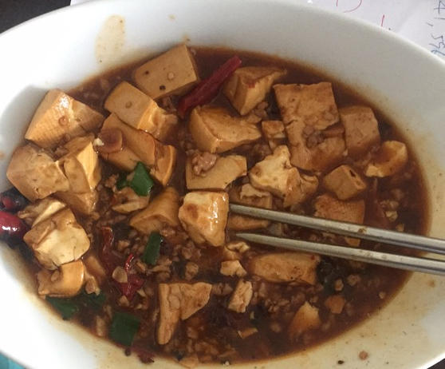
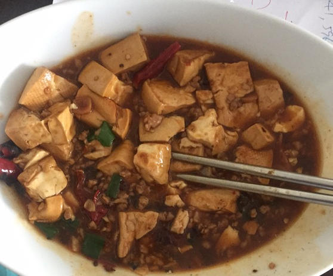

麻婆豆腐
视频教程见大师的菜 麻婆豆腐.
要点,
- 豆腐要嫩, 过开水去豆腥味, 加盐提味,一点酱油提色
- 牛肉末炒酥取出
- 加豆瓣酱,豆豉,辣椒面等.不能加姜,会压住其他味.炒到发香.加肉末,加高汤
- 汤最多到豆腐的50%
- 用炒勺的背面推豆腐保持豆腐完整
- 三次勾芡(第一次让味进入豆腐,第二次起到拉力作用,第三次彻底粘合,不要吐水出来)
- 最后用小火甚至微火,多烧一下才入味(要不断推豆腐,否则豆腐沾锅底)
- 起锅前加入蒜苗, 少许花椒粒烤热后磨成粉撒入

视频教程见大师的菜 麻婆豆腐.
要点,
